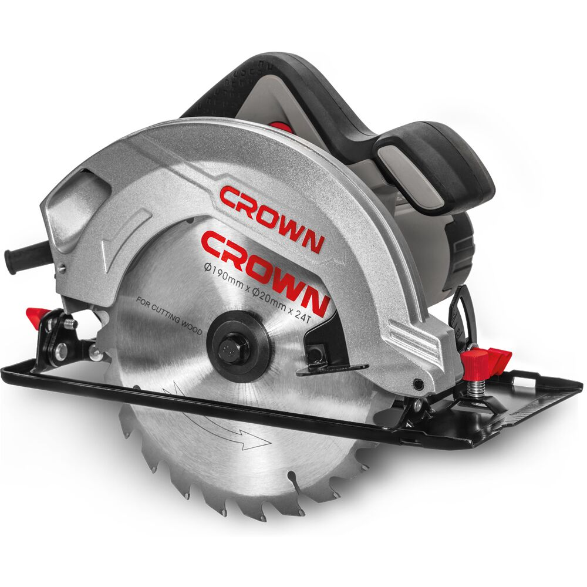

Доступно для арендыДисковая пила CROWN CT15188-190
CROWN CT15188-190
400с./сутки
Стоимость и доступность на выбранные даты уточнит менеджер.
Короткое описание
Дисковая пила для работы с деревом с регулировкой глубины пропила и угла наклона. Дополнительная рукоятка с нескользящей накладкой помогает контролировать инструмент, параллельный упор — выполнять точный рез. Блокировка шпинделя упрощает замену диска. Предусмотрены воздушное охлаждение, фиксатор выключателя и дополнительная защита якоря.
Характеристики
- Мощность
- 1500 Вт
- Диаметр диска
- 190 мм
- Посадочный диаметр
- 20 мм
- Тип двигателя
- Щёточный
- Число оборотов
- 5500 об/мин
- Глубина пропила при 90°
- 66 мм
- Глубина пропила при 45°
- 46 мм
- Длина кабеля
- 2 м
- Работа с направляющей шиной
- Да
- Расположение диска
- Справа от ручки
- Подошва
- Штампованная
- Габариты без упаковки
- 325 × 250 × 270 мм
- Вес нетто
- 3,9 кг
- Погружная пила
- Нет
- Мини-пила
- Нет
- Подсветка и лазер
- Нет
- Расклинивающий нож
- Нет
- Регулировка оборотов
- Нет
- Плавный пуск
- Нет
- Поддержание оборотов под нагрузкой
- Нет
- Патрубок для пылесоса
- Нет
Отзывы
Об этом инструменте пока нет отзывов.